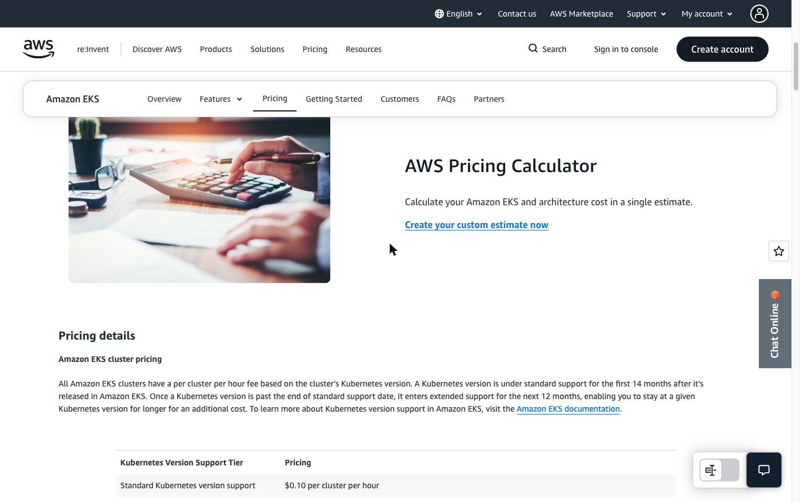

Local, Self-Managed, or Managed Kubernetes? How to Actually Decide
Once you know Docker and the core Kubernetes concepts, a different question shows up fast: how do you actually run Kubernetes in production? Locally on a laptop, self-installed on your own servers, or through a managed service like Amazon EKS? This decision changes who operates the control plane, who handles upgrades and certificates, and how much operational responsibility your team is signing up for. Get this one wrong and you're not choosing a tool — you're quietly choosing a headcount.
The real question: who owns the control plane
Every Kubernetes installation approach answers the same underlying question differently: who is responsible for the API server, etcd, the scheduler, and the controller manager staying healthy? That's the axis everything else sits on. There are three common approaches, and they sit at three very different points on it.
Local installation — minikube, kind
Local installation means running Kubernetes on your own machine, for development and testing. minikube creates a single-node cluster on your laptop — the control plane and your workloads all run on that one node. kind (Kubernetes IN Docker) creates clusters by running each node as a Docker container, which makes it useful for testing multi-node behavior, still entirely on your laptop.
Both are excellent for learning, both are free, both take minutes to set up. The honest limitation: if your laptop dies, your cluster is gone, and you don't get the cloud-managed load balancers, autoscaling, or storage integration a real platform needs. Local installation is for learning and development. Full stop — don't run anything real users depend on from a laptop.
Self-managed — kubeadm, kOps
Self-managed means you provision the infrastructure yourself — your own VMs, on-prem or in the cloud — and your team is responsible for installing, configuring, and operating the cluster through its whole lifecycle. kubeadm is the official Kubernetes tool for bootstrapping a cluster: you provide the machines, initialize the control plane, join worker nodes — it automates the bootstrap, not the ongoing operational responsibility. kOps (Kubernetes Operations) goes further on AWS, provisioning much of the required infrastructure and helping manage the cluster's lifecycle, including upgrades and scaling.
The advantage is real flexibility — you control the Kubernetes version, the networking plugin, storage configuration, security integrations, the whole architecture. The cost is that your team now owns etcd backup and recovery, certificate management, version upgrades, monitoring, and disaster recovery. Control and responsibility arrive together; you don't get one without the other.
Managed Kubernetes — EKS, GKE, AKS, OpenShift
Managed Kubernetes means the cloud provider runs the control plane for you. The API server, etcd, scheduler, and controller manager are deployed, monitored, and maintained by the provider — you manage worker nodes and stay responsible for your applications, Kubernetes resources, and cluster configuration. The major platforms: Amazon EKS, Google Kubernetes Engine (GKE), Azure Kubernetes Service (AKS), and Red Hat OpenShift-based managed offerings (ROSA, ARO, OpenShift Dedicated).
This has become the default for a reason: Kubernetes is no longer a niche technology teams are experimenting with — it's production infrastructure at massive scale. The CNCF's 2025 Annual Cloud Native Survey found 82% of container users now run Kubernetes in production, up from 66% in 2023 — treat the exact percentage as directional, not gospel, but the trend is real. When Kubernetes becomes core infrastructure at that scale, reducing control-plane operations stops being a nice-to-have. Managed Kubernetes lets engineering teams spend less time keeping the control plane alive and more time shipping.
The real cost of running it yourself
This is worth making concrete rather than abstract. Owning the control plane means owning three specific, unglamorous things:
etcd. This is the distributed key-value store holding the entire state of your cluster — every Pod, Deployment, Service, ConfigMap, and Secret lives there. If etcd becomes unavailable or loses data, the control plane can no longer reliably manage the cluster. In a self-managed setup, your team designs and operates etcd for high availability, backups, disaster recovery, and performance — see the official etcd hardware recommendations for what that actually requires in CPU, disk IOPS, and node counts.
Certificate management. A standard kubeadm cluster runs on 13 separate certificates — API server, etcd, scheduler, and more — each expiring after one year by default (`kubeadm certs check-expiration` and `kubeadm certs renew` are the built-in tools for this; see the official kubeadm certificate management docs). If certificates expire unexpectedly, control-plane components can stop talking to each other — your team owns watching for that before it happens, not after.
Upgrades. The official kubeadm upgrade docs are explicit: skipping minor versions is unsupported. If you're two versions behind, you upgrade one step at a time — control plane first, then worker nodes — not straight to latest. This is real, ongoing engineering time: the Komodor 2025 Enterprise Kubernetes Report found teams losing roughly 34 workdays a year to Kubernetes incidents. Treat that number as industry context, not a guarantee for your team specifically — but the direction it points is real.

With EKS specifically, AWS runs a highly available control plane across multiple Availability Zones and owns keeping the API server and etcd up. You still own everything running inside the cluster — worker nodes, applications, networking policies, security configuration, access control, cost optimization. So the real comparison isn't "is EKS free" — it's whether you want your team operating the control plane, or paying AWS to consume it as a service.
When self-managed actually is the right answer
There are three genuine reasons to run self-managed Kubernetes — worth knowing because you'll run into them on real teams:
- Air-gapped or disconnected environments. A managed service by definition requires connectivity to the provider's control plane. In a fully air-gapped environment — some defence systems, classified government networks, critical infrastructure — self-managed with kubeadm is the only option, because the whole control plane has to live inside your own infrastructure.
- Government and defence classification requirements. Some classified environments have infrastructure approval requirements that don't permit a commercial managed control plane at all.
- Strict data sovereignty and regulatory requirements. Increasingly relevant for European companies: US-based providers are subject to the US CLOUD Act, which can create legal questions about data access even when the data itself is stored outside the US. Frameworks like DORA, NIS-2, and SecNumCloud 3.2 shape real technology decisions in regulated sectors — the CNCF's "From Data Residency to Digital Sovereignty" is a genuinely useful deep-dive if you work with regulated or European organizations.
Notice what's not on that list: "we want full control," or "our engineers prefer it," or generic vendor-lock-in worry. Those might come up in a discussion, but they're rarely enough on their own — the operational cost is too high unless something structural is actually forcing the decision. If you're in one of the three situations above, self-managed is right. If you're not, managed Kubernetes is the practical default.
What transfers, regardless of which you pick
Choosing EKS (or GKE, or AKS) as your starting point doesn't lock in what you actually learn. Helm, GitHub Actions, Argo CD, Prometheus, Grafana, and the rest of the modern platform stack are Kubernetes ecosystem technologies, not EKS-specific features — they run on any cluster, managed or not, cloud or on-prem. Where a service is provider-specific (ECR for images, Secrets Manager for secrets, IAM for access), every other cloud has an equivalent pattern. The pattern is what matters; the specific service is an implementation detail. DMI's own 14-week curriculum introduces Kubernetes and Terraform fundamentals in exactly this spirit — see the daily grading loop that verifies students actually built it, not just watched it — and this post is the next layer up, the production decision that comes after you know the basics.
Key takeaways
- Local (minikube, kind) — for learning and development, never for anything real users depend on.
- Self-managed (kubeadm, kOps) — full control and full operational responsibility (etcd, certs, upgrades). The right call only when something structural requires it: air-gapped environments, government/defence infrastructure rules, or strict sovereignty/compliance requirements — not just a preference for control.
- Managed (EKS, GKE, AKS, OpenShift) — the provider runs the control plane; it's the practical default for most teams, and what most of the modern platform stack you'd build on top of it is portable regardless of which one you pick.
Once you've picked managed Kubernetes, the next question is what's actually inside the cluster you just chose — see EKS architecture: control plane, data plane, and what to decide before launch.
Want to build the fundamentals these decisions sit on top of? Start with DMI Self-Paced →